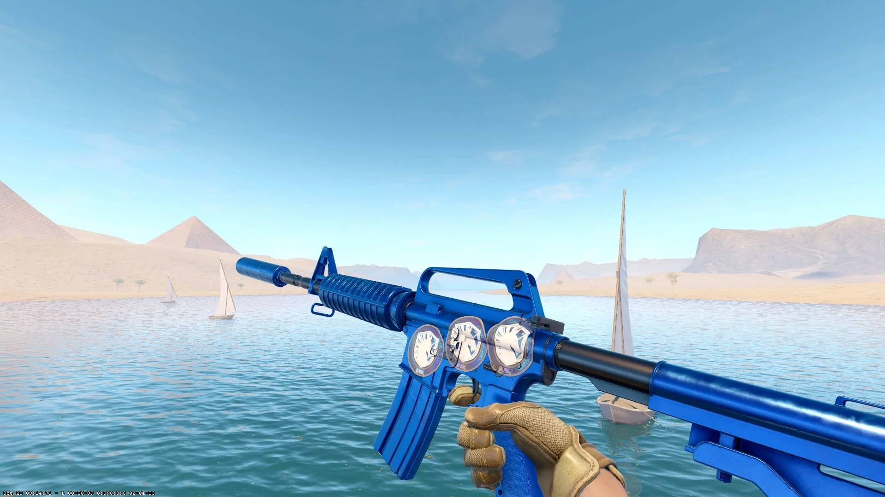

Competitivo
Modo principal donde se juega en equipos de 5 contra 5 con sistema de rangos.

Precisión, estrategia y reflejos
Counter-Strike es un videojuego de disparos en primera persona (FPS) donde dos equipos compiten en distintos objetivos. Es uno de los juegos más influyentes en los esports.
Counter-Strike comenzó en 1999 como una modificación (mod) del videojuego Half-Life, desarrollada por Minh “Gooseman” Le y Jess Cliffe. Lo que empezó como un proyecto independiente rápidamente ganó popularidad gracias a su enfoque en el juego en equipo, la estrategia y la precisión.
Debido a su éxito, Valve adquirió los derechos del juego y lanzó versiones oficiales. Counter-Strike 1.6 se convirtió en un estándar en los cibercafés y en las primeras competencias de esports, marcando el inicio de una escena competitiva global.
Con el paso del tiempo, el juego evolucionó a Counter-Strike: Source, que introdujo mejoras gráficas utilizando el motor Source. Sin embargo, fue Counter-Strike: Global Offensive (CS:GO), lanzado en 2012, el que consolidó definitivamente al juego como uno de los títulos más importantes en el mundo competitivo.
En 2023, Valve lanzó Counter-Strike 2, una actualización importante basada en el motor Source 2. Esta versión introdujo mejoras visuales, físicas más realistas y cambios en la jugabilidad, manteniendo la esencia clásica que caracteriza a la saga.
Hoy en día, Counter-Strike es considerado uno de los pilares de los deportes electrónicos (esports), con torneos internacionales, equipos profesionales y millones de jugadores activos en todo el mundo.
Modo principal donde se juega en equipos de 5 contra 5 con sistema de rangos.
Modo relajado para aprender y divertirse sin presión.
Ideal para practicar puntería y reflejos constantemente.
El mapa más icónico del juego, conocido por su equilibrio.
Muy jugado en competitivo, requiere buena comunicación.
Mapa táctico con zonas estrechas y control estratégico.
Para progresar en Counter-Strike es importante practicar el aim, aprender los mapas y comunicarse bien con el equipo.
